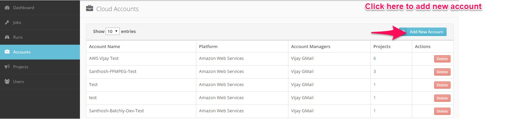
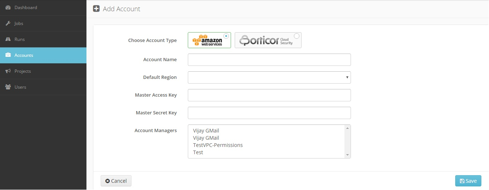
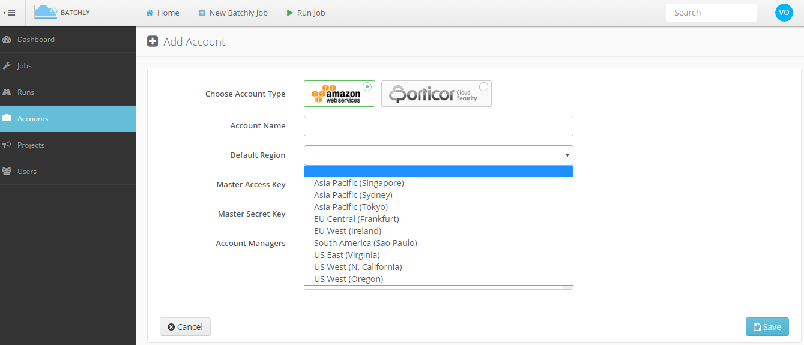
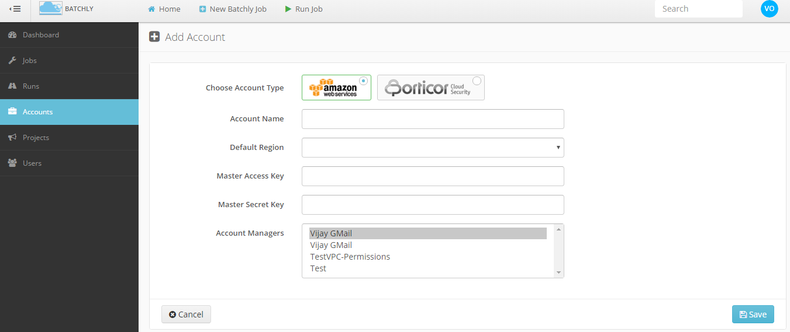

Add AWS Account
Before adding an account customer need to have their own AWS account. The following steps will demonstrate how to add an account:
1.Click the Accounts link in the left sidebar.

2.Account Type: Add a new AWS account to batchly.

3.Account Name: A name to identify the account.
4.Default Region: Specify the default AWS region you want to operate in.

5.Access Key: Provide the AWS Access key.
6.Secret Key: Provide the AWS Secret key of the corresponding Access Key.
7.Account Manager: Assign a project manager for the project.
